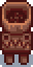
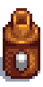

Deconstructor
A Deconstructor can be used to salvage some of the material of a crafted item. It can be purchased for Qi Gem 20 Qi Gems at Qi's Walnut Room.
Price: $499.99
Mayonnaise Machine
The Mayonnaise Machine is a type of Artisan Equipment used to make Artisan Goods. It takes eggs and turns them into various kinds of Mayonnaise.
Price: $899.99
Oil Maker

The Oil Maker is a type of Artisan Equipment used to make Artisan Goods. It takes specific items and turns them into oil.
Price: $199.99